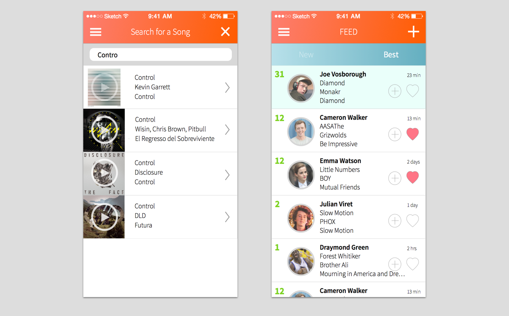
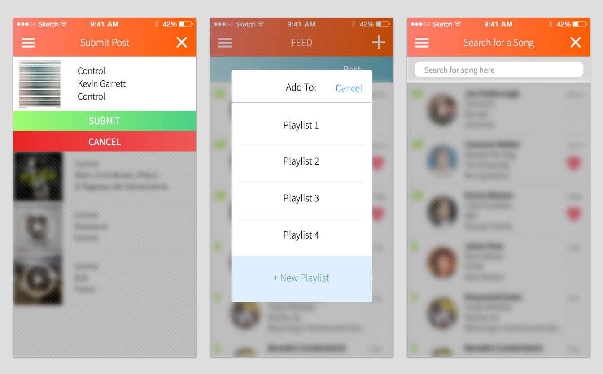
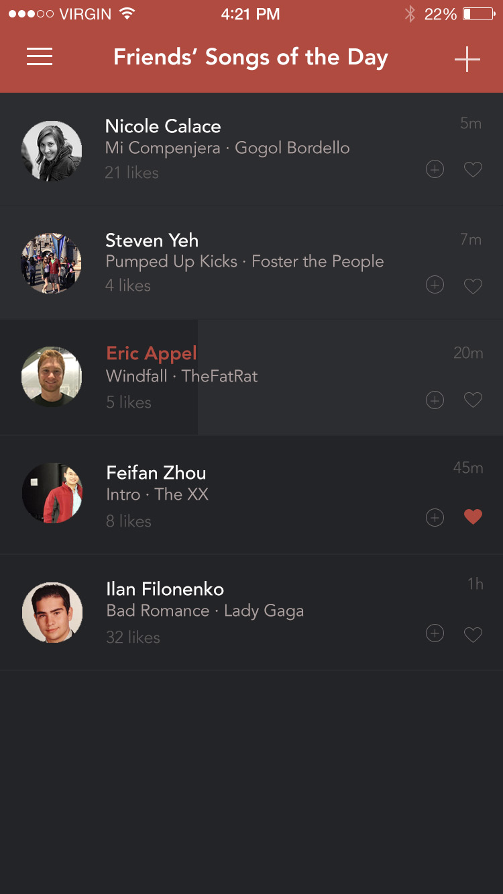

Within CUAppDev, we conducted various user interviews using a set protocol to better explore current practices and needs for music discovery and sharing. During this process, we interviewed a total of 15 college students at Cornell University. We chose college students and young professionals as our target user because they already use popular music services like Spotify, and are most likely to adapt new social media. Some key data from our interviews indicated that few people even knew Spotify offered music sharing and how they intentionally listened to music on services like Spotify in private sessions, because they did not want to automatically share their music taste, and wanted more control over what they shared.
As a preliminary design activity to help unify our design team’s vision, we each created our own storyboards for how we thought users might use the application. With these storyboards, we came to an agreement that the purpose of our app would have be allowed to share on song each calendar day. Many of the storyboards highlighted the emotional, personal experience attached to listening to a song that is meaningful to a friend. Based on this insight, we decided the focus of our app should be social sharing, not musical exploration.
Initially, we had assumed the idea that music sharing would be within local communities such as a certain area on campus like a library or building. For example, playlists would be curated based on the people around you and where you were located.
As a way to focus on the ability to explore content, we planned out a tabbed interface that would place more attention to both the feed and exploration the same way Instagram does. In our initial designs, one tab would allow users to explore content from their friends while the other would allow them to explore content geographically. We also explored putting the post creation button in this tabbed interface. The app is only interesting if users add content, so we definitely had fair reason to want to make post creation button prominent. We considered placing it in the center tab again much like Instagram, however, users are only able to add one song a day, so having post creation as the main focus could be a fairly negative experience after posting for the day.
In the end, we concluded that the main focus of the application was to explore and discover over sharing music. For this reason, we decided to put the add button in the top right corner rather than in the center tab.
Post Creation Mock ups (Center tab vs. Corner)
And sticking with the idea of putting the post creation in the top right corner, we felt that there was no need to have a tabbed interface anymore. Instead, we opted to go with a hamburger for navigation. In making this decision, we thought it made sense because it also placed more importance on the main feed.
In exploring the best way for users to add their daily song, we questioned how transient the process of submitting a post should be. We first approached the problem with a modal style solution where after selecting a song to post. This approach had a pop-up appear over the rest of the application asking the user to submit or cancel their request. We thought this might be appropriate because since users are only posting once per day, the heavier interaction would be appropriate.
We then approached the idea with having a snapchat-style submit process where the confirmation is at the bottom and unobtrusive to the rest of the content. We ended up going with this format because we wanted to encourage users to post. To do this, we thought we should make the process as light as possible. By implementing the bottom banner as the confirmation, the process seems faster without offering the user too much distraction from the rest of the application. This was important to us because our main goal was still to get users to explore music rather than share.
Having figured out the overall basic navigation of the application, we each shifted our thoughts into a design scheme to use. Below are some examples of medium fidelity mock ups leading up to the final iterations.
 Below is the final design schemes we agreed upon. The color scheme was inspired by the iconic red labels on black records.
This process was done to create MVP of this project, our team is continuing to grow on what we have and we are working to build a version 2.